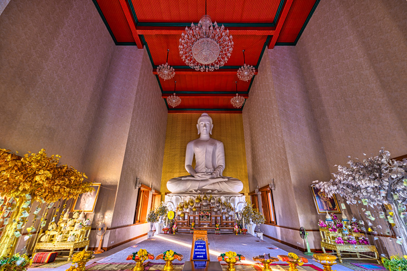
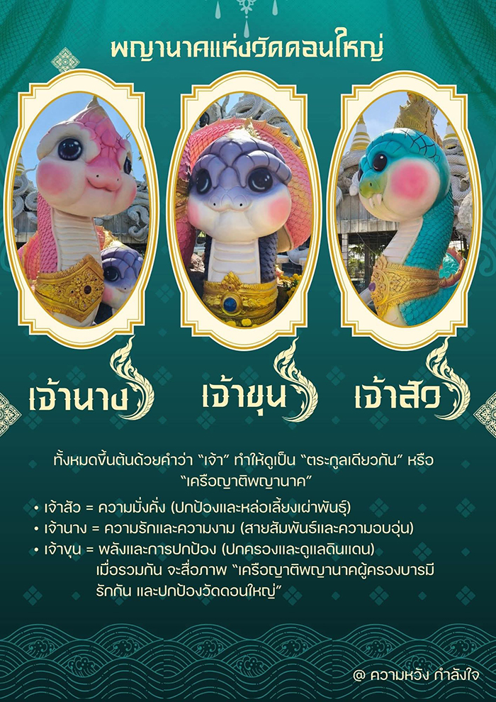
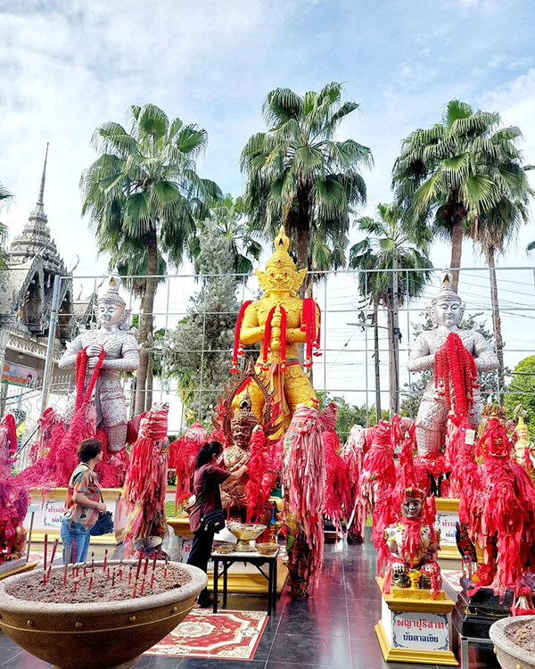
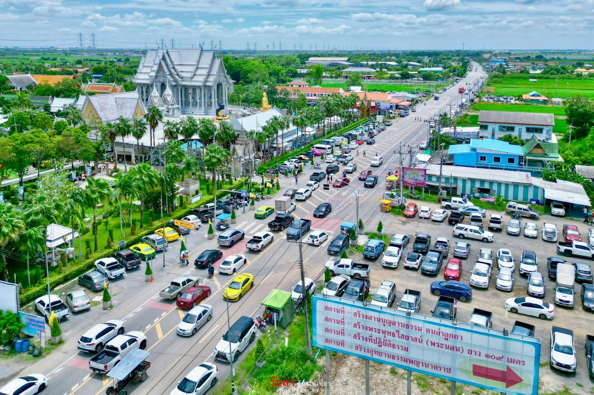

ภาพจาก : YuenSiuTien / shutterstock.com
วัดดอนใหญ่ เดิมทีวัดนี้มีชื่อว่า “วัดกลางคลองแปด” ก่อตั้งขึ้นในปี พ.ศ. 2453 เพื่อเป็นศูนย์รวมจิตใจและสถานที่ทำบุญของชุมชนท้องถิ่น ต่อมาได้เปลี่ยนชื่อเป็น “วัดดอนใหญ่” ตามลักษณะภูมิประเทศที่ตั้งอยู่บนเนินดินสูงซึ่งเป็นจุดเด่นของพื้นที่ วัดแห่งนี้ได้รับการพัฒนาอย่างต่อเนื่องจนกลายเป็นที่รู้จักจากการมีอุโบสถเงินจตุรมุขที่โดดเด่นและเป็นเอกลักษณ์เฉพาะของจังหวัดปทุมธานี รวมทั้งยังเป็นแหล่งประดิษฐานสิ่งศักดิ์สิทธิ์หลากหลายองค์ที่ผู้คนเดินทางมาไหว้ขอพรเสริมสิริมงคลตลอดปี
จุดเด่นที่สำคัญของวัดดอนใหญ่ คือ “อุโบสถเงินจตุรมุข” ซึ่งถือเป็นอุโบสถเงินแห่งเดียวในจังหวัดปทุมธานี มีสถาปัตยกรรมที่วิจิตรและโดดเด่นอย่างมาก ภายในประดิษฐาน “หลวงพ่อใจดีมั่งมีศรีสุข” พระประธานที่มีความเชื่อว่าให้พรด้านความมั่งคั่งและสุขภาพดี นอกจากนี้ยังมี “ท้าวเวสสุวรรณปลดหนี้” องค์ใหญ่ที่ตั้งเด่นกลางลานวัด เป็นที่นิยมอย่างมากสำหรับผู้ที่ต้องการขอพรเรื่องการเงิน ปลดหนี้ และโชคลาภ รวมทั้งมีสิ่งศักดิ์สิทธิ์อื่น ๆ เช่น พระพิฆเนศ พระแม่ธรณี และพระเจ้าตากสิน ที่ผู้คนมากราบไหว้เสริมความเป็นสิริมงคล
ภาพจาก : YuenSiuTien / shutterstock.com
“พญาน้อล” หรือ “พญานาคน้อย” แห่งวัดดอนใหญ่ กลายเป็นแลนด์มาร์กสายมูรุ่นใหม่ที่โด่งดังบนโซเชียล ด้วยรูปลักษณ์สุดน่ารัก สีสันสดใส และดีไซน์คล้ายการ์ตูน ต่างจากพญานาคแบบเดิมที่คุ้นตา เบื้องหลังความน่ารักของพญาน้อล ไม่ได้มีแค่ความแบ๊วสะดุดตา แต่ยังแฝงไว้ด้วยความเชื่อและพลังศรัทธาที่ลึกซึ้งตามตำนานพญานาค พญานาคน้อยองค์นี้เป็นสัญลักษณ์แห่งความบริสุทธิ์ ความเมตตา และการเริ่มต้นใหม่ จึงกลายเป็นที่เคารพบูชาของผู้ศรัทธาไม่น้อย
ภาพจาก : เฟซบุ๊ก วัดดอนใหญ่ คลอง8ลำลูกกา
ปัจจุบัน วัดดอนใหญ่ มี พญานาคน้อยทั้งหมด 3 สี ประดิษฐานรวมกัน โดยแต่ละองค์มีชื่อเฉพาะตัวคือ
*** การบูชาพญานาค เชื่อว่าพญานาคเป็นเทพผู้มีอิทธิฤทธิ์ เป็นสัญลักษณ์ของความยิ่งใหญ่ ความอุดมสมบูรณ์ และความมั่งคั่ง สามารถบันดาลโชคลาภ ความอุดมสมบูรณ์ และคุ้มครองผู้บูชาให้พ้นจากภยันตรายต่างๆ ได้
ท้าวเวสสุวรรณที่วัดดอนใหญ่ เรียกได้ว่าเป็นที่นิยมของผู้คนที่เดินทางมากราบไหว้เป็นจำนวนมาก เหตุที่เป็นเช่นนั้นเพราะผู้คนเชื่อว่าการมาไหว้ท้าวเวสสุวรรณที่นี่จะช่วยปลดล็อกหนี้สิน เกิดความคล่องตัวทางการเงิน และเสริมโชคลาภให้เจริญรุ่งเรือง นอกจากนี้ทางวัดยังจัดพื้นที่ให้สักการะอย่างสะดวก มีบรรยากาศสงบและศรัทธาจากชุมชนที่ช่วยเสริมพลังให้ผู้มาเยือนรู้สึกมั่นใจในความศักดิ์สิทธิ์นั่นเอง
ภาพจาก : เฟซบุ๊ก Wirachai Boonla
ที่จอดรถที่วัดดอนใหญ่ มีความสะดวกและรองรับจำนวนรถได้เป็นอย่างดี มีลานจอดรถกว้างทั้งภายในและรอบ ๆ บริเวณวัด ซึ่งเพียงพอต่อการรองรับผู้มาเยือนจำนวนมาก วันธรรมดามีที่จอดกว้างข้ามฝั่งถนน ไม่มีค่าจอดรถ แต่มีรถรางรับ-ส่งภายในพื้นที่วัด ทำให้ไม่ต้องเดินไกลจากลานจอดไปยังโบสถ์
แนะนำว่าวันหยุดและช่วงจัดพิธีใหญ่ เช่น พิธีอาบน้ำมนต์ หรือวันสำคัญทางศาสนา ที่จอดรถอาจเต็มเร็ว แนะนำให้ไปเร็ว ช่วงเช้าราว 07.00-08.00 น. จะได้ที่จอดสะดวก ไม่ต้องกังวลเรื่องหาที่จอด
ภาพจาก : เฟซบุ๊ก วันลา.ต้องได้เที่ยว